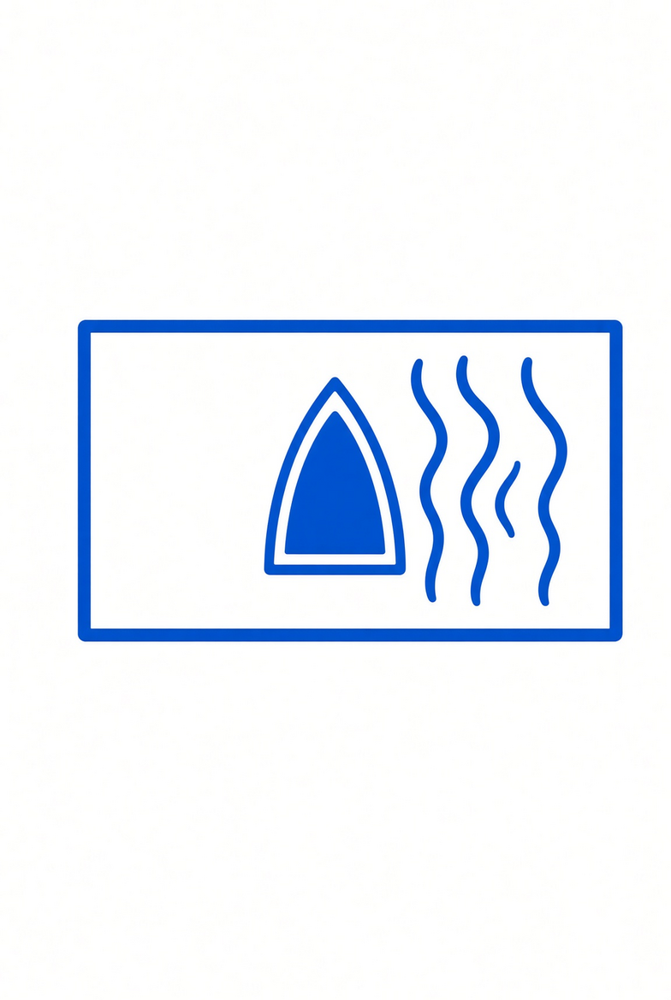
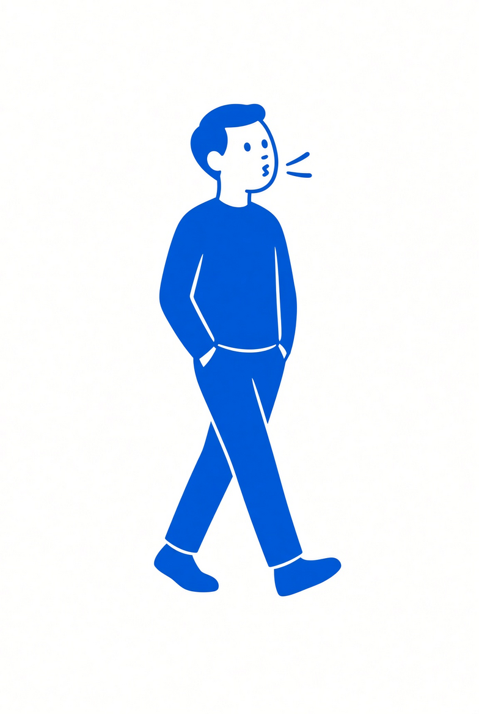
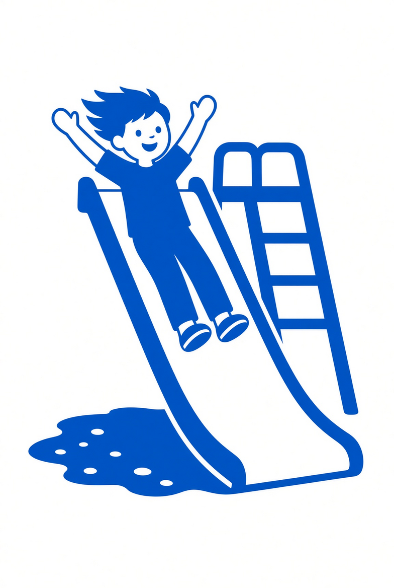
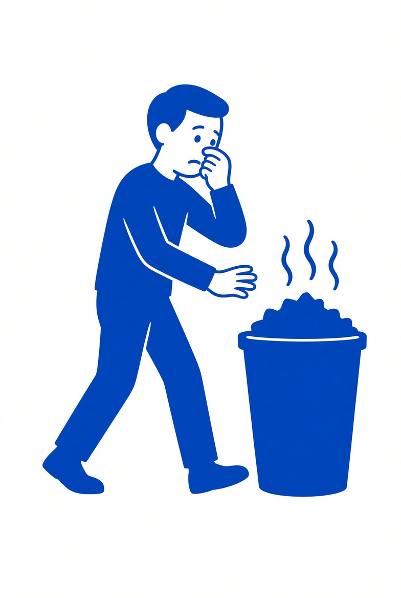
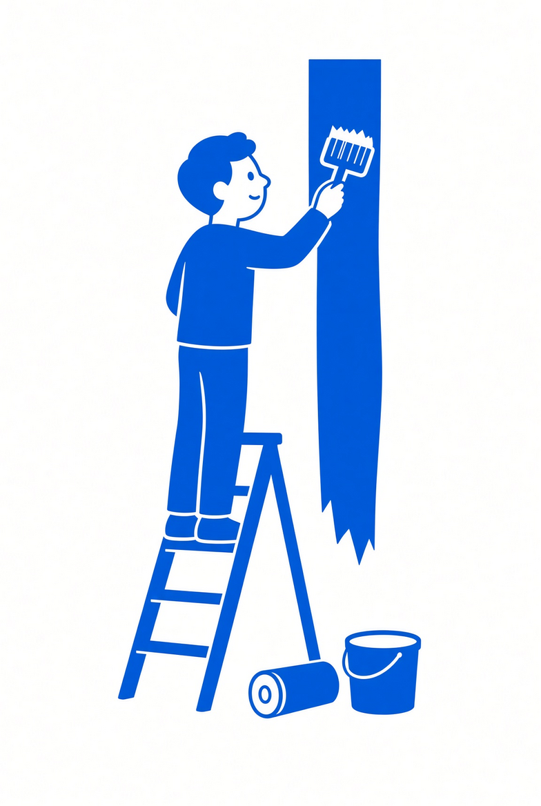
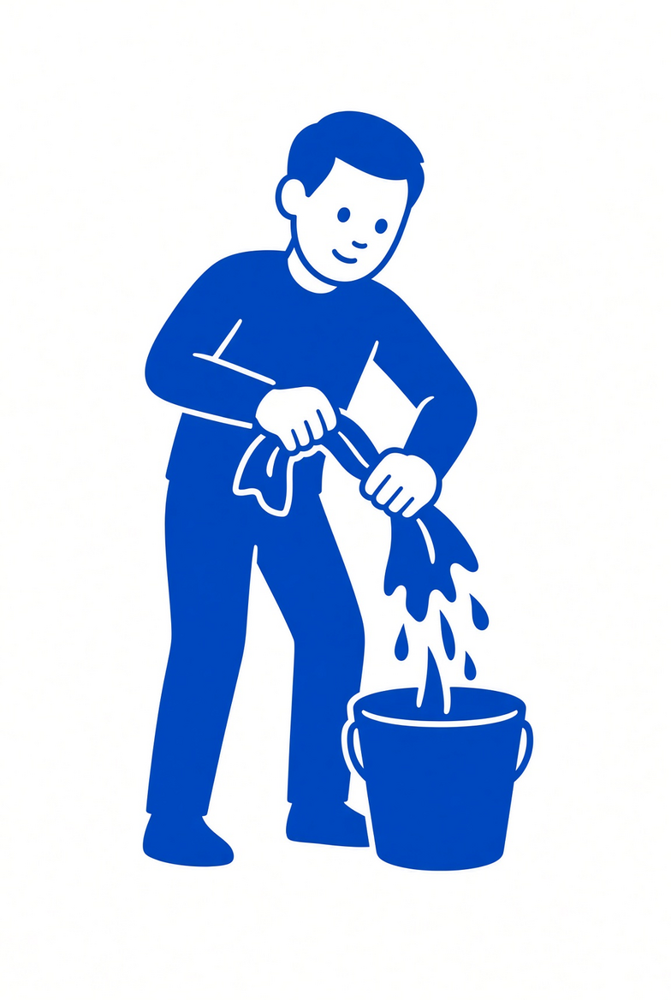
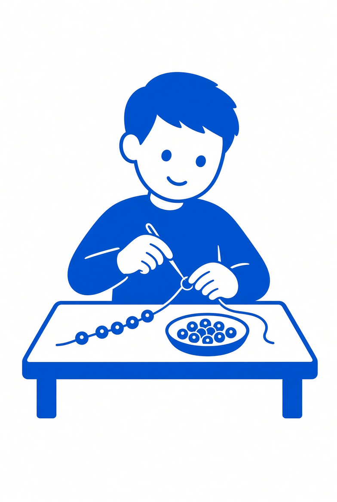

ontwijken
to dodge
onregelmatigrang 5080Movement & positiongetekend
ontweekheeft ontweken
- Scene
- one adult on a playground leans sharply to one side, knees bent, as a ball flies past where the head was; one child at the far side has just thrown it.
- Must read
- a body leaning aside as a ball flies past the head.
- Avoid
- a ball caught in both hands (vangen); a ball thrown (gooien); a foot caught on a stone (struikelen); a person standing under a roof (schuilen).
- Alt text
- Iemand helt opzij terwijl een bal vlak langs het hoofd vliegt.
ontwijken.png · rang 5080 · B2 onregelmatig · lexicon woorden.tsv

smelten
to melt
onregelmatigrang 5357Nature & weathergetekend
smoltheeft/is gesmolten
- Scene
- a snowman stands on a patch of grass under a bright sun, leaning to one side, its head half sunk into the body and a pool of water spreading round its base; one child stands beside it looking down at the puddle.
- Must read
- a snowman sagging into a pool of water.
- Avoid
- fat in a pan on a stove (bakken); a frozen pond (bevriezen); ice cubes in a cup (koud); water poured from a jug (gieten).
- Alt text
- Een sneeuwpop zakt scheef in elkaar in de zon; om de voet ligt een plas water.
smelten.png · rang 5357 · B2 onregelmatig · lexicon woorden.tsv

strijken
to iron
onregelmatigrang 5428House & homegetekend
streekheeft gestreken
- Scene
- a rectangular ironing board seen from above with a plain flat shirt shape lying on it and a triangular iron outlined in the middle of the shirt; the left half of the shirt is smooth and blank and the right half has three bold crease lines; no face, no hood, no figure; nothing else.
- Must read
- an iron between the smooth half and the creased half of one shirt.
- Avoid
- a tall pile of shirts beside a scowling man (een hekel hebben aan); a T-shirt folded in half on a table (vouwen); wet washing hung on a line (ophangen); a wet cloth twisted between two fists (wringen).
- Alt text
- Iemand gaat met een heet ijzer over een overhemd op een plank; achter het ijzer is de stof glad.
strijken.png · rang 5428 · B2 onregelmatig · lexicon woorden.tsv

fluiten
to whistle
onregelmatigrang 5464Arts & mediagetekend
flootheeft gefloten
- Scene
- one adult walks along with both hands in the pockets and the lips pursed into a small round shape; two short curved lines come away from the lips, and the cheeks are slightly hollow. Nobody else is in the picture and the street is empty.
- Must read
- pursed lips with two short curved lines coming away from them.
- Avoid
- an open mouth with curved lines and a hand on the chest (zingen); cupped hands round an open mouth (roepen); a mouth close to an ear (fluisteren); a pursed mouth beside a candle flame (blazen); a whistle on a cord.
- Alt text
- Iemand loopt met de handen in de zakken en de lippen getuit; twee korte boogjes komen van de mond.
fluiten.png · rang 5464 · B2 onregelmatig · lexicon woorden.tsv

schuilen
to shelter
onregelmatigrang 5688Nature & weathergetekend
schuilde / schoolheeft geschuild / gescholen
- Scene
- one adult stands close under the roof of a bus shelter with the coat collar up, looking out at heavy rain that falls just beyond the edge of the roof; the ground in front is wet.
- Must read
- a person under a roof with rain falling just outside it.
- Avoid
- an umbrella held up while walking; a person hidden behind a wall (verbergen); a person running through rain (rennen); a body leaning aside from a ball (ontwijken).
- Alt text
- Iemand staat onder een afdakje met de kraag omhoog en kijkt naar de regen vlak voor zich.
schuilen.png · rang 5688 · B2 onregelmatig · lexicon woorden.tsv

gieten
to pour
onregelmatigrang 5799Plants & farminggetekend
gootheeft gegoten
- Scene
- one adult stands beside a potted plant on a low table and tips a watering can over it, a thin stream of water falling from the long spout onto the soil; the plant stands upright and healthy. Nothing else is in the picture.
- Must read
- a stream of water falling from a watering can's spout onto a plant.
- Avoid
- a thin jet from a pistol nozzle (spuiten); two jugs poured into one bowl (mengen); a banknote falling into a chest (schenken); rain falling from the sky (regenen).
- Alt text
- Iemand houdt een kan met een tuit schuin boven een plant; er valt een straaltje water op de aarde.
gieten.png · rang 5799 · B2 onregelmatig · lexicon woorden.tsv

glijden
to slide (down)
onregelmatigrang 5930Sport & gamesgetekend
gleedheeft/is gegleden
- Scene
- one child goes down a playground slide feet first, arms up and hair streaming back; the child is halfway down the slope and the ladder stands behind. No other child is on the slide, and the ground at its foot is bare sand.
- Must read
- a child halfway down a slide.
- Avoid
- a child on a seesaw (wippen); a drawer pushed shut with one palm (schuiven); a skier on a slope (skiën); a child going up a ladder (klimmen).
- Alt text
- Een kind zit halverwege de schuine baan van een speeltoestel, de voeten vooruit en de armen omhoog.
glijden.png · rang 5930 · B2 onregelmatig · lexicon woorden.tsv

knijpen
to pinch
onregelmatigrang 6468People & relationsgetekend
kneepheeft geknepen
- Scene
- one older adult leans down and pinches a child's cheek between thumb and forefinger, smiling; the child squints with one eye shut. Both stand side by side in a plain room; the child holds a small toy and nothing else is in the picture.
- Must read
- thumb and forefinger pinching a child's cheek.
- Avoid
- lips on a cheek (zoenen); a hand moving along a cat's back (strelen); half a lemon pressed onto a juicer (persen); a wet cloth twisted between two fists (wringen).
- Alt text
- Een oudere volwassene neemt de wang van een kind tussen duim en wijsvinger.
knijpen.png · rang 6468 · B2 onregelmatig · lexicon woorden.tsv

wrijven
to rub
onregelmatigrang 6657Body & healthgetekend
wreefheeft gewreven
- Scene
- one adult stands outside in a thick coat and rubs both palms hard against each other in front of the chest, shoulders hunched; a small cloud of breath hangs in front of the mouth.
- Must read
- two palms rubbed together in front of the chest.
- Avoid
- hands under a running tap (wassen); open hands held out to a small fire (warmen); hands clapping with a gap between them (klappen); hands folded together (bidden).
- Alt text
- Iemand in een dikke jas houdt de handpalmen tegen elkaar en beweegt ze heen en weer voor de borst.
wrijven.png · rang 6657 · B2 onregelmatig · lexicon woorden.tsv

verjagen
to chase away
onregelmatigrang 7415Plants & farminggetekend
verjaagde / verjoegheeft verjaagd
- Scene
- one adult in a vegetable patch waves both arms and a cloth at three crows, which lift off the soil with wings spread and fly away from the person. The cloth flaps above the head and a low fence edges the patch. Three crows with wings spread, heads and beaks turned away from the person, flying outward and upward, clear of the soil.
- Must read
- birds flying off from a person waving both arms.
- Avoid
- a cat crouched before a mouse (jagen); seeds scattered on soil (zaaien); bread thrown to ducks (voeren); a hand raised to say goodbye.
- Alt text
- Iemand in een moestuin maakt grote gebaren met beide armen en een doek; drie kraaien vliegen op.
verjagen.png · rang 7415 · B2 onregelmatig · lexicon woorden.tsv

stinken
to stink
onregelmatigrang 7589Body & healthgetekend
stonkheeft gestonken
- Scene
- one adult walks past an overflowing rubbish bin with the face turned sharply away, one hand holding the nose and the other waving in front of the face; three wavy lines rise from the bin.
- Must read
- wavy lines rising from a bin and a person turning away holding the nose.
- Avoid
- a person sniffing a flower (ruiken); paper dropped into a bin (verwijderen); a cough into the elbow (hoesten); a person sneezing into a tissue.
- Alt text
- Iemand loopt langs een volle afvalbak, draait het hoofd weg en houdt de neus dicht.
stinken.png · rang 7589 · B2 onregelmatig · lexicon woorden.tsv

vouwen
to fold
onregelmatigrang 7773House & homegetekend
vouwdeheeft gevouwen
- Scene
- two plain white hands hold a single rectangular sheet of paper in the middle of the picture, folded in half, with the fold line running clearly along the middle of the sheet and the two halves lying flat against each other; the hands pinch the folded edge; nothing else in the picture, no table, no other objects.
- Must read
- a sheet of paper folded in half between two hands.
- Avoid
- a shirt hanging on a line; a parcel wrapped in paper (verpakken); paper torn in two (scheuren); a person pulling on a shirt (aankleden).
- Alt text
- Twee handen klappen een vel papier dubbel.
vouwen.png · rang 7773 · B2 onregelmatig · lexicon woorden.tsv

waaien
to blow (wind)
onregelmatigrang 7791Nature & weathergetekend
waaide / woeiheeft gewaaid
- Scene
- one adult walks along an open path bent into the wind, one hand reaching back too late as a hat lifts off the head and flies away behind; the coat and scarf stream back in the same direction. Nothing else is in the picture: no tree, no washing line.
- Must read
- a hat lifting off a head and flying away behind.
- Avoid
- a person blowing out candles (blazen); leaves dropping from a tree (vallen); a person running after a ball (rennen); a tree bending with towels flapping on a line (winderig).
- Alt text
- Iemand loopt voorovergebogen over een pad; de hoed vliegt van het hoofd en de sjaal wappert naar achteren.
waaien.png · rang 7791 · B2 onregelmatig · lexicon woorden.tsv

sluipen
to sneak
onregelmatigrang 8408Movement & positiongetekend
sloopheeft/is geslopen
- Scene
- one adult tiptoes past a sleeping dog in a hallway, knees bent and shoulders raised, one finger on the lips and the eyes on the dog; one foot is lifted high on the toes.
- Must read
- a person on tiptoe past a sleeping dog.
- Avoid
- a cat crouched before a mouse (jagen); an ordinary walk (lopen); a person on hands and knees (kruipen); one eye at the gap of a door (gluren).
- Alt text
- Iemand loopt op de tenen langs een slapende hond, met een vinger tegen de lippen.
sluipen.png · rang 8408 · B2 onregelmatig · lexicon woorden.tsv

behangen
to wallpaper
onregelmatigrang 8414House & homegetekend
behingheeft behangen
- Scene
- one adult on a low stepladder smooths a long strip of wallpaper onto a wall with a wide brush, the bottom of the strip still loose; a roll of paper and a paste bucket stand on the floor.
- Must read
- a strip of wallpaper smoothed onto a wall with a brush.
- Avoid
- a brush on a canvas (schilderen); a picture hung on a nail; a string of paper flags on a wall (versieren); a roller of paint on a wall.
- Alt text
- Iemand op een trapje strijkt een lange baan papier met een brede kwast tegen de muur.
behangen.png · rang 8414 · B2 onregelmatig · lexicon woorden.tsv

wringen
to wring (out)
onregelmatigrang 8616House & homegetekend
wrongheeft gewrongen
- Scene
- one adult stands at a bucket and twists a wet cloth between two fists in opposite directions, water running out of the cloth into the bucket. A mop leans against the wall behind and nothing else is in the picture.
- Must read
- a wet cloth twisted between two fists with water pouring out.
- Avoid
- a cloth wiping a table (schoonmaken); a tea towel round a plate (drogen); a wet shirt on a line (nat); two palms rubbed together (wrijven).
- Alt text
- Iemand draait een natte doek met twee vuisten in elkaar; het water loopt in de emmer.
wringen.png · rang 8616 · B2 onregelmatig · lexicon woorden.tsv

rijgen
to thread (beads)
onregelmatigrang 9014Arts & mediagetekend
reegheeft geregen
- Scene
- one child sits at a table and pushes a needle with a long thread through a bead, a row of beads already on the thread; a small dish of loose beads stands beside.
- Must read
- a bead slid onto a thread.
- Avoid
- a bandage wound round an arm (verbinden); a rope knotted round firewood (binden); a pencil on paper (tekenen); a needle through cloth.
- Alt text
- Een kind schuift kraaltjes aan een draad; er staat een bakje met losse kraaltjes naast.
rijgen.png · rang 9014 · B2 onregelmatig · lexicon woorden.tsv

druipen
to drip
onregelmatigrang 9044House & homegetekend
droopheeft/is gedropen
- Scene
- one adult has just stepped indoors and stands on the doormat in a soaked coat, holding a closed umbrella point down; water runs off the coat hem and the umbrella tip in thin trickles and gathers in a small pool on the mat. The front door stands open behind.
- Must read
- water running off a soaked coat and a closed umbrella onto the mat.
- Avoid
- a drop falling from a turned-off tap (lekken); rain strokes filling the sky outdoors (regenen); a person dry under a roof beside the rain (schuilen); a wet cloth twisted between two fists (wringen).
- Alt text
- Iemand staat net binnen op de deurmat; van de natte jas en de dichte paraplu loopt water op de mat.
druipen.png · rang 9044 · B2 onregelmatig · lexicon woorden.tsv